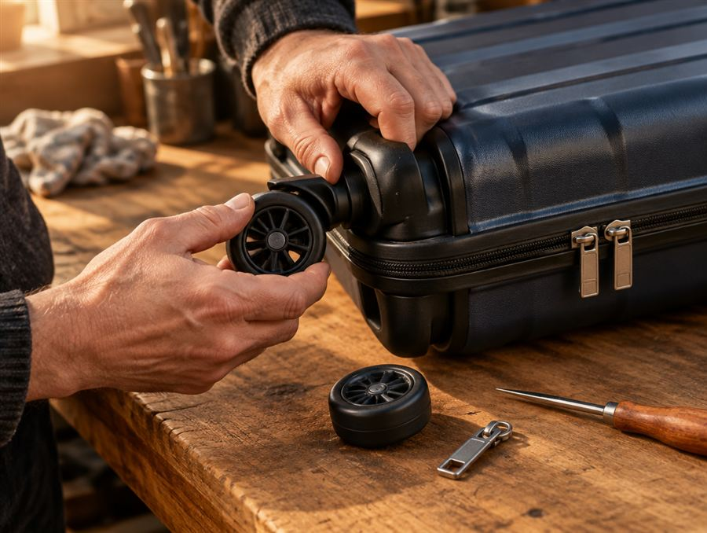
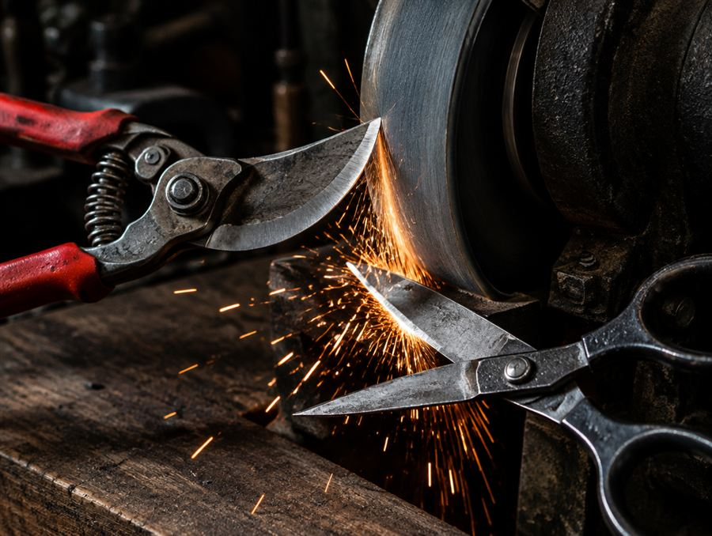
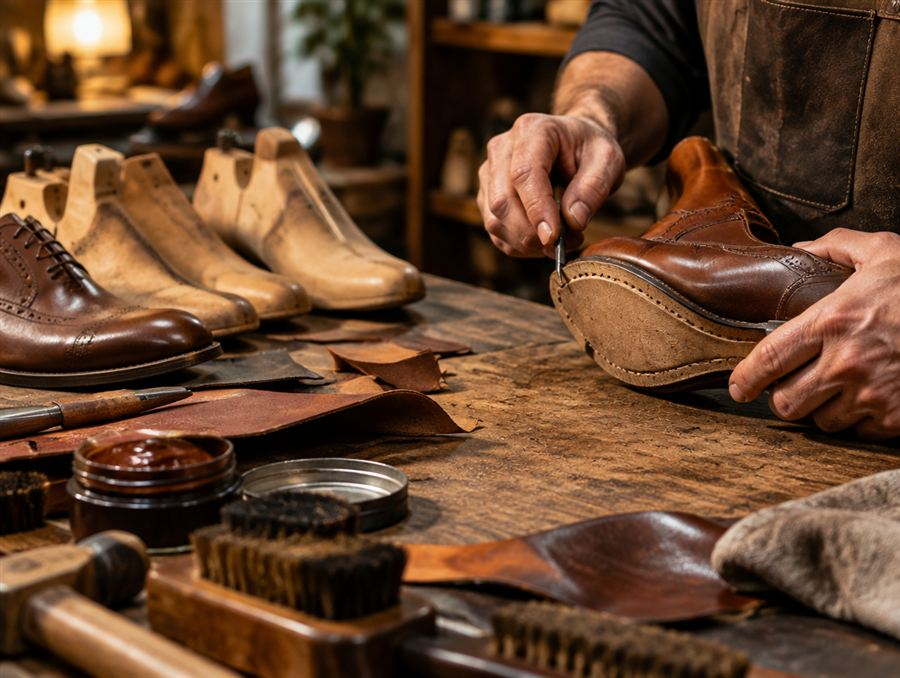
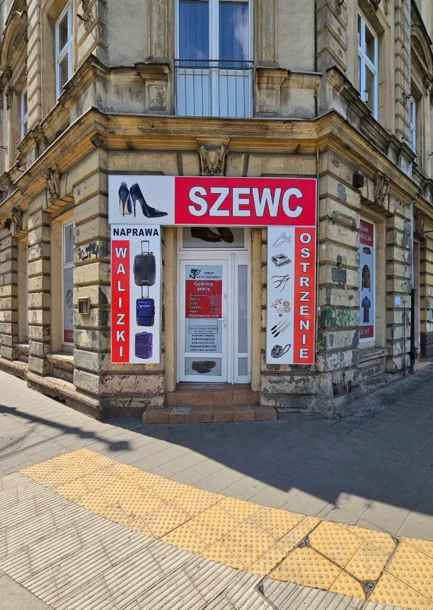
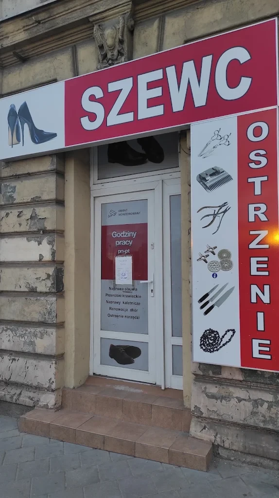

Naprawa walizek i toreb
- wymiana kółek, stelaży i rączek
- naprawa i wymiana zamków oraz suwaków
- zamki szyfrowe, klamry, zatrzaski
- podszewki, przetarcia, szycie maszynowe
- torebki, plecaki, teczki, paski
Szewc · walizki · ostrzenie · Łódź
Walizki, torby, obuwie i skóry — oraz noże, sekatory i nożyczki ostre jak nowe. Rzemiosło z doświadczeniem, w centrum Łodzi.



Ceny „od" — dokładną kwotę podajemy po obejrzeniu rzeczy lub zdjęcia.
| Usługa | Cena |
|---|---|
| Wymiana kółek w walizce | od … zł |
| Wymiana / naprawa zamka lub suwaka | od … zł |
| Wymiana rączki | od … zł |
| Ostrzenie noża kuchennego | od … zł |
| Ostrzenie sekatora / nożyc | od … zł |
| Ostrzenie nożyczek | od … zł |
Ceny do uzupełnienia przez właściciela.
Opisz uszkodzenie w kilku słowach i zostaw kontakt. Odpowiemy i poprosimy o zdjęcie, a następnie podamy wstępną wycenę — ostateczną cenę potwierdzamy po obejrzeniu rzeczy.
Prawdziwe zdjęcia prac zakładu pojawią się tutaj — wystarczy zdjęcie telefonem przed i po naprawie.
Jesteśmy małym zakładem rzemieślniczym w centrum Łodzi. Wierzymy, że dobrą rzecz warto naprawić, zamiast kupować nową — to tańsze i lepsze dla środowiska. Wieloletnie doświadczenie i solidna robota to nasza wizytówka.


Zwykle tak — wymiana kółek, zamka czy rączki kosztuje znacznie mniej niż nowa walizka dobrej jakości.
Zależy od zakresu. Prostsze naprawy i ostrzenie często od ręki lub w kilka dni. Dokładny termin podajemy przy wycenie.
Do ustalenia z właścicielem — informacja zostanie uzupełniona.
Jest orientacyjna. Cenę ostateczną potwierdzamy po obejrzeniu rzeczy.
Naprawa walizek, ostrzenie narzędzi
al. Piłsudskiego 35
90-307 Łódź
Telefon: 600 476 484
Godziny otwarcia: do uzupełnienia
Zadzwoń teraz